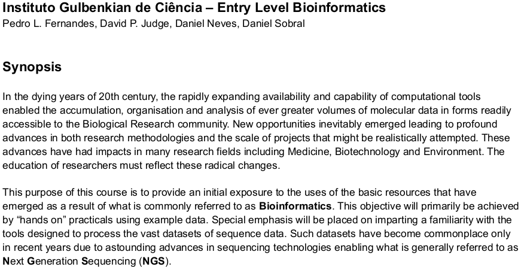
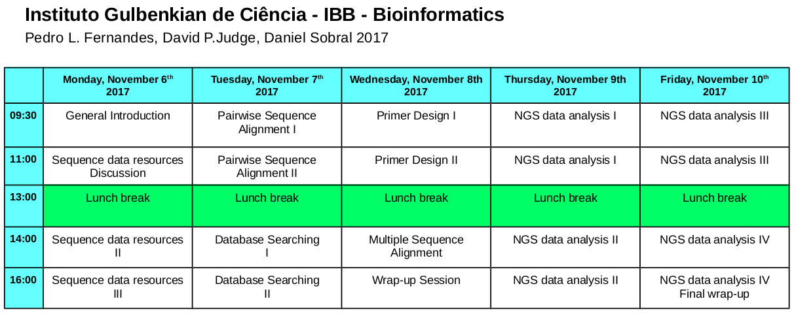

Click Here For a brief description of this course.

Click Here For the Timetable for this course.

A quizz, wait until the Delivery version is ready and the login to Room 32COU as a Student.
Click here for a quizz.
Maybe some string to hang together Intro talk about the exercise(s), Aniridia etc etc here
Too early for detail, but would be good to keep rambling on track!!!